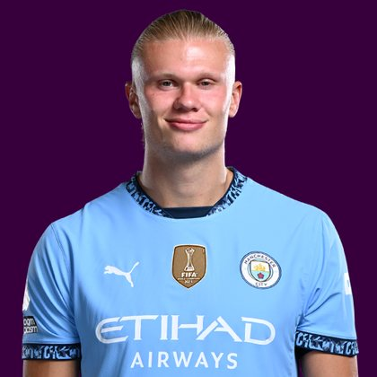

PITCHKEEP
Premier League ranks
Player File · FWD MCI · Premier #1

Erling Haaland
FWD · Man City · age 26 · £15.5m
2025/26 Premier League
| Year | Starts | Min | G | A | xG | xA | CS | GC | Bonus | YC | Sleeper | FPL |
|---|---|---|---|---|---|---|---|---|---|---|---|---|
| 2025/26 | 34 | 2953 | 27 | 8 | 25.5 | 2.67 | 13 | 32 | 43 | 2 | 317.2 | 239 |
Plus
- The Premier 1.01 and Sleeper BPL 1.01 - 27 goals, 317.2 Sleeper points.
- First-choice penalties at £15.5m. The published boards still have him inside the top three.
- 25.5 xG, 27 finishes. The finishing did not run hot. It ran like Haaland.
- The Premier 1st overall - hybrid of Sleeper BPL and the published pro lists.
- 317.2 Sleeper BPL 2025 points (Pitch #1).
Minus
- £15.5m is the FPL tax. You cannot pair him with two other premiums without wrecking the squad.
- Fantasy Football Scout parks him 24th on a value lean - that is the £15.5m talking, not the striker.
- Yahoo's GW1 XI has him 10th. Template managers still try to go without the obvious.
- 8 assists on 2.67 xA - the creation number needs a second season.
- Board spread 1-15 (Sleeper BPL 2025 to Premier League Scout Club Picks).
PitchKeep Take · The Premier
Erling Haaland is the player The Premier is built around. Sleeper BPL 2025 scored his 2025/26 line at 317.2, first of 400. The other 23 boards average 3.87. Split the difference and he is still 1.01. Twenty-seven Premier League goals, eight assists, 34 starts, 2,953 minutes, 13 clean-sheet cameos that Sleeper barely cares about because he is a forward. The Pitch already had him first. The Premier does not argue.
The 2025/26 tape is the same argument on film: City walk him into the box and he finishes. 25.5 expected goals, 27 actual. That is not a lucky spike. That is a No. 9 doing No. 9 work at a volume nobody else on this list can touch. Igor Thiago's 22 goals are the closest counting-stat rival and still live 60 Sleeper points back because Haaland also added eight assists and a 6.8 FPL points-per-game.
Set pieces are the rest of the floor. He is first-choice from the spot. He is not on corners. He does not need to be. Threat 1,520, ICT 302.3, 43 bonus. Official FPL had him on 239 points, also first. The boards that fade him (Scout 24, SofaScore 17, Yahoo XI 10) are pricing the £15.5m hit or a single-week XI, not the season. We are ranking the season.
£15.5m is the market admitting the 1.01. The Premier's job is not to be clever about Haaland. It is to put him first so the rest of the 400 has a ceiling to be measured against.
Instruction: you do not trade Haaland for two very good players on this curve. Rank 1 is 12,000 BK Value. Bruno at 2 is close enough that a calculator will call some packages fair. The board still wants the Norwegian. If your league scores Sleeper, this is not a conversation. If it scores FPL, it is still not a conversation.
Sleeper vs FPL
Same 2025/26 line, two scoring tables
Board graph
Spread 1-15 · 28 sources
Tape · 2025/26 Premier League
Erling Haaland All 27 Goals in Premier League 2026 | English Commentary
Every Board
Spread 1-15 · 28 sources
| Source | Rank |
|---|---|
| Sleeper BPL 2025 | 1 |
| FPL 2025/26 Points | 1 |
| FPL Price Board | 1 |
| FPL xGI | 1 |
| FPL Ownership | 1 |
| RotoWire FPL 400 | 1 |
| The Athletic PL 50 | 1 |
| ESPN PL 50 | 1 |
| RotoWire Premiums | 1 |
| RotoWire GW1 captains | 1 |
| The Independent Watchlist | 1 |
| Premier League Scout Selection | 1 |
| Premier League Scout Must-Haves | 1 |
| Premier League Scout Key Prices | 1 |
| Fantasy Football Fix Captains | 1 |
| Football Faithful Premiums | 1 |
| Fantasy Football Hub | 1 |
| BBC Sport FPL | 1 |
| FPL ICT Index | 2 |
| RotoWire Fantrax / Sleeper 400 | 2 |
| RotoWire GW1 | 2 |
| Fantasy Football Fix Elite | 2 |
| Fantasy Football Fix GW1 | 2 |
| FPL EP Next | 3 |
| Football Faithful | 3 |
| Yahoo Cheat Sheet | 4 |
| Yahoo GW1 XI | 10 |
| Premier League Scout Club Picks | 15 |
PK News
- Enzo Fernandez transfer news: Man City sign midfielder from Chelsea in British-record-equalling £125m deal
- Man City news: One boost, one injury concern for Pep Guardiola before crucial Arsenal Premier League showdown
- Every Premier League transfer this summer as window deadline passes and Guehi to Liverpool suffers late collapse
- Nottingham Forest eyeing Premier League record sale for Elliot Anderson ahead of formal Manchester City talks
All players · The Premier · The Pitch · PK News · Calculator